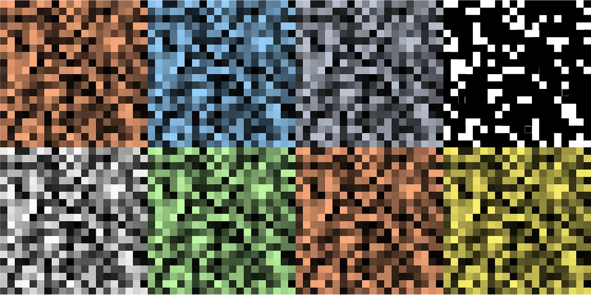
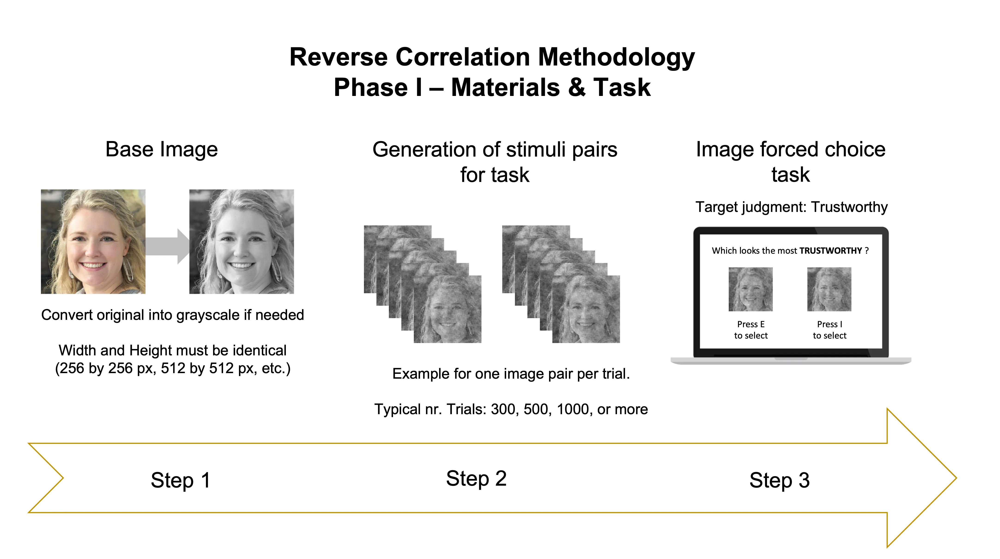
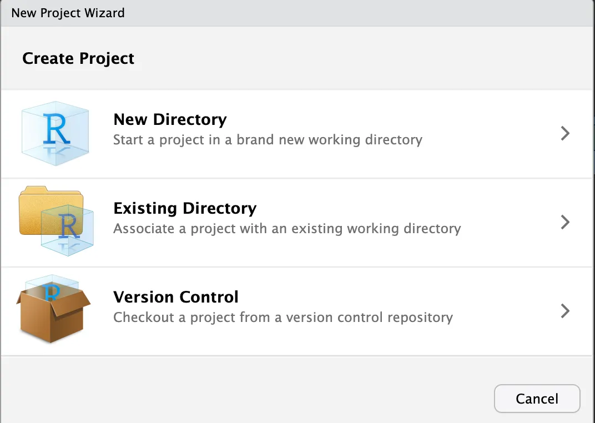
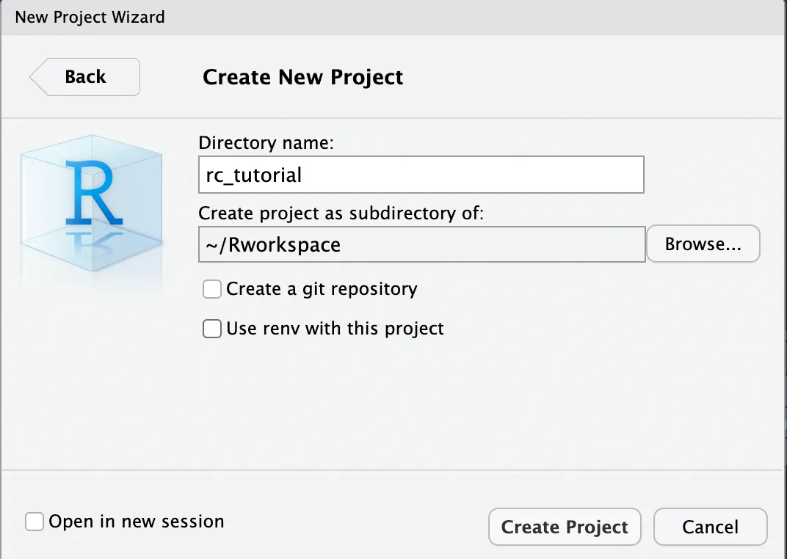
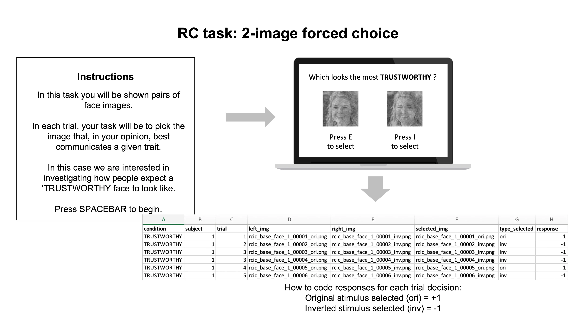
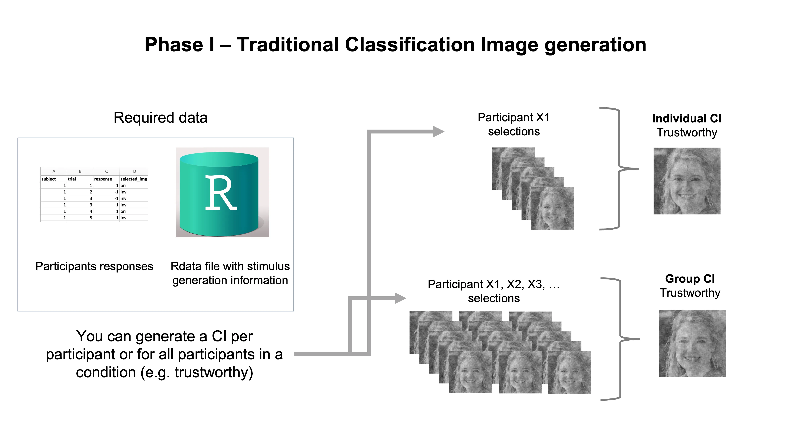
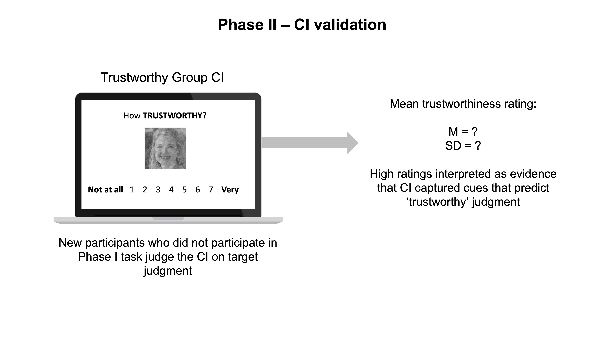
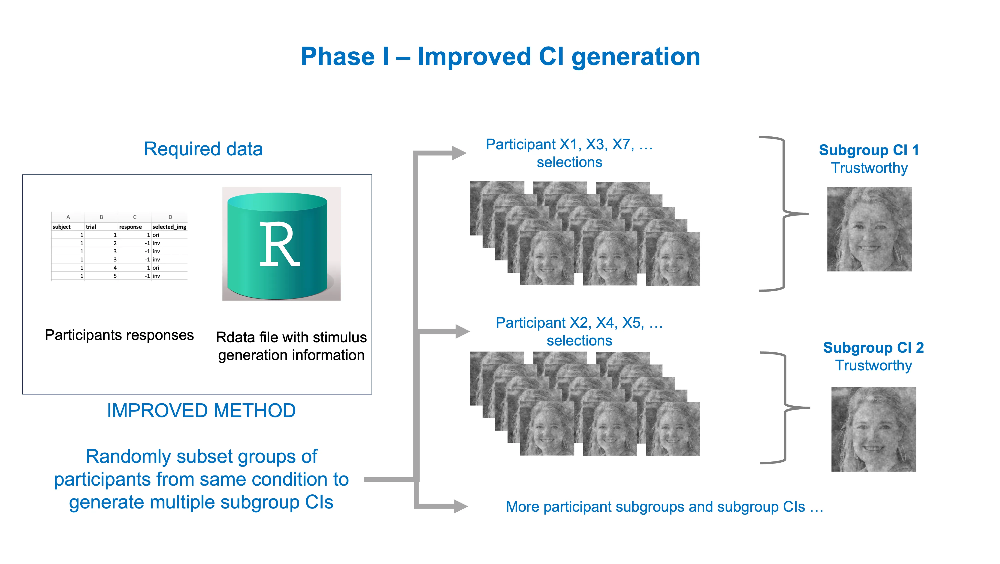
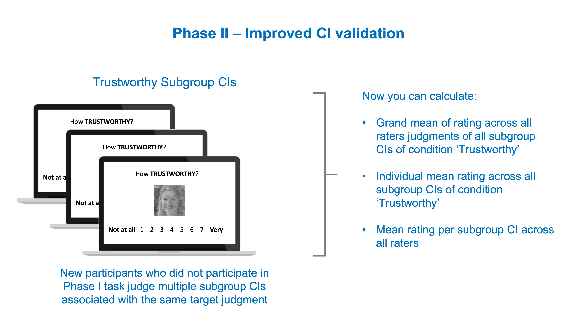
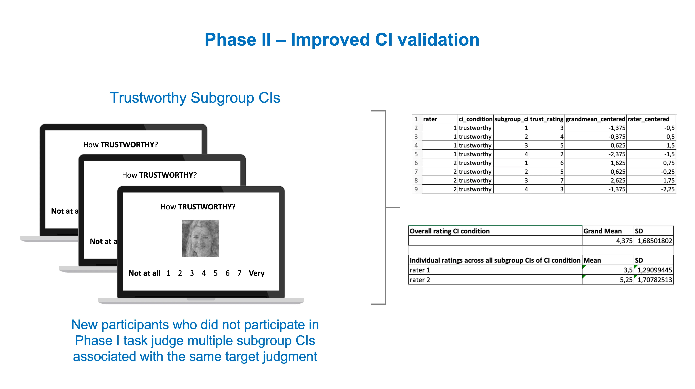

Using Reverse Correlation Methods in Psychology Research: R tutorial and Recommended Practices

If you found this post, chances are you might already be familiarized with the reversed correlation (RC) methodology in psychological research. But in case you never heard about it, are just curious, or need to refresh your memory, I provide a brief overview of the method below, along with R code you can use to implement the method from the start.
The main motivation behind this post is to offer an up-to-date tutorial on how to implement the two-phase variant of the RC methodology following the latest recommended practices. While doing so, I will show you the steps you can take to avoid a well-known limitation of this method.
The two-phase RC methodology
Below I describe the steps typically involved in a two-phase reverse correlation methodology in the domain of social psychological research (see for example, Dotsch & Todorov, 2012).
This methodology has been often used to examine research question social judgments based on facial appearance, such as ‘Which facial cues predict that a person will be judged as having Portuguese nationality?’ or ‘Which facial cues predict that a person will be judged as trustworthy?’. Naturally, you could ask the same question about things other than faces, such as what features of an object predict that we judge it as a ‘chair’. However, for the sake of simplicity, the current overview will focus on the example of social judgments from facial appearance.
Research question: Imagine you’re interested in visualizing the facial cues that people use to judge someone as a trustworthy person.
Phase I
The image below illustrates the 3 main steps of Phase I.

Step 1
The first thing you need to implement the method is to find an image of a face. This is called the base image. There are many variables you may want to take into consideration during the selection process (for details see Brinkman et al., 2017), but picking an image of a face is what you’d go for here. This can be seen as a trick to approximate the image to what we think is the ‘prototypical’ image of the thing we want to study, which in our example is a face conveying trustworthiness. For this post, I used a randomly generated deep fake image of a female face (using thispersondoesnotexist.com). You can copy-paste it from below:
To implement the method you can use the rcicr R package (Dotsch, 2016), along with a couple of other useful R packages for data and image processing. In the R tutorial below I show you how you can setup an R project, prepare the base image to use with rcicr, generate task stimuli, and generate classification images (CIs) for different analytical scenarios (older approach vs. latest recommendations).
Requirements: This tutorial assumes you have R and RStudio installed (R version used in this tutorial is 4.2.0, but I expect later versions to work just as well).
Setup R project
I highly recommend you create a folder in your computer called “Rworkspace” or any other name you prefer, where you can store all your R projects inside. This makes it easier to organize and find your multiple projects and contents.
Next, open RStudio, go to File > New Project

Now you can select New Directory > New Project
In the window below, use Browse to find your “Rworkspace” folder. Once you set it, you can now enter the name of your R project under Directory name. I named my project “rc_tutorial”. This will create a folder named after the project name inside the parent folder Rworkspace. Inside your R project folder you will find a .Rproj file. This .Rproj file teels R that the root directory of your project is where it is located.
For now, you can simply proceed without ticking any of the options as shown below (unless you are familiarised with git version control or want to have better control of your R environment).
Click Create Project and you’re ready to start coding!

To start coding open a R script (File > New File) and save it.
To install packages you can use the following function in the RStudio console:
install.packages("PACKAGE_NAME_HERE")If you have a recent version of the RStudio it will automatically detect the packages that are required by a script and will prompt you to install them. You should start by loading all the required packages at the beginning of a script. You’ll need these:
# Required packages for this tutorial
library(here) # for easy path referencing
library(tidyverse) # my preference for data processing, improved code readability
library(magrittr) # to pipe code
library(devtools) # required to load github based libraries
library(imager) # to process and edit images
# Automatically detect if rcicr package (v1.0.0 -- github version) is installed.
# If yes, loads it. Otherwise installs it and loads it.
if(!require(rcicr) | packageVersion("rcicr") != "1.0.0") {
devtools::install_github('rdotsch/rcicr')
library(rcicr)
}The rcicr package requires you to convert the base image to grayscale, and to resize it to identical width and height (e.g. 512 by 512 pixels).
# Path to image file ------------------------------------------------------
# if image is in R project root directory (where Rproj file is located)
# simply enter the filename as a string
img_path <- "generated-image-bxx2g8.jpg"
# otherwise you can use the here() package to specify the path to the file
# starting from the R project root directory
# in the commented example below, the file would be stored in a folder named 'subfolder_X' located in the root directory
# img_path <- here::here("subfolder_X", "generated-image-bxx2g8.jpg")
# Image dimensions --------------------------------------------------------
# Set width in pixels
img_width <- 512
# Automatically set height to match width (required for rcicr)
img_height <- img_width
# Convert to grayscale and resize image -----------------------------------
base_image <- load.image("generated-image-bxx2g8.jpg") %>%
imager::grayscale() %>%
imager::resize(size_x = img_width, size_y = img_height)
# Save image --------------------------------------------------------------
save.image(im = base_image, "gray_base_image.jpg")Step 2
Now you can use the base image to generate many pairs of images. These pairs of images are the stimuli you need for the 2-image forced choice task. In each pair, one image is the base image with superimposed visual noise, and the other image is the base face with the inverted noise from the first image (its negative image). The use of noise + inverted noise is a trick to maximize the differences between the images in any given task trial. This minimizes the difficulty of having to choose between highly similar images. For this example, I’m generating 500 image pairs, for a task with 500 decision trials. Here’s how you can generate them:
# Load base image file ----------------------------------------------------
base_face_file <- list("base_face" = "gray_base_image.jpg")
# Generate image pairs ----------------------------------------------------
# How many trials do you wish to have in your task?
number_task_trials <- 500
# Which type of visual noise do you want to generate?
# Default is sinusoid; other options include Gabor noise
selected_noise <- "sinusoid" # or "gabor"
# Generate stimuli
generateStimuli2IFC(base_face_file,
n_trials = number_task_trials,
img_size = 512,
noise_type = selected_noise,
stimulus_path = "./stimuli")
# WHERE ARE STIMULI STORED?
## The generated stimuli can be found in a folder named 'stimuli' (or name you
## used in stimulus_path argument above)
## In this folder you can also find the .Rdata file file needed for analysis of
## data after data collection. This .Rdata file contains the parameters that
## were used to generate each stimulusStep 3
Now that you have your stimuli, you can use them in a 2-image forced choice task — as we have only two images per trial, but there are other variants of the task with more images per trial (see Schmitz et al., 2021). Please note that each image pair is composed of an original image and its inverted version (its visual negative).
Use your preferred experiment-building program to run the task. Some popular choices include Inquisit, PsychoPy, OpenSesame, Gorilla, or Qualtrics. In the image below you can see an example of a 2-image forced choice task. I highlight the essential components and the expected content of the data output, but please add Informed Consent in the beginning, and demographics (+ debriefing if necessary) at the end.

Important to take into account while building the task:
Image pair presentation. Each image pair generated in Step 2 includes an image labeled as original (e.g. rcic_base_face_1_00001_ori.png) and another labeled as inverted (e.g. rcic_base_face_1_00001_inv.png). These should be presented as a pair in the same task trial. Therefore, each trial number will be associated with a specific pair of stimulus images.
Counterbalance ori and inv images. You may want to counterbalance the position where the ori and inv images are presented, between-participants. That is, for half the participants the ori images are displayed at the left (inv at the right), and for the other half the ori images are displayed at the right (inv at the left).
Required data output. Your program needs to log the following information: condition of the target construct you’re interested in (e.g. trustworthy), unique subject ID, trial number, image presented on the left, image presented on the right, image selected, whether image is ori or inv, response (derived from the type of image selected (ori = +1, inv = -1). See the example data output above. The most important data to have in the end are: subject, trial number, and response coded as 1 or -1.
For the sake of this tutorial, I generated some bogus response data to use in the next steps. You can also generate it using the code below.
# Simulate RC response data -----------------------------------------------
# How many participants?
nr_subjects <- 50
# How many trials?
nr_trials <- 500
# Generate simulated data frame
sim_data <- data.frame(
condition = "TRUSTWORTHY",
subject = rep(1:nr_subjects, each = nr_trials),
trial = rep(1:nr_trials, times = nr_subjects),
resp = rbinom(nr_subjects*nr_trials, 1, 0.3)
) %>%
mutate(resp = ifelse(resp == 0, -1, 1))
# Save data
write_csv(sim_data, file = "sim_rc_data.csv")Generating Classification Images
Once you have finished collecting and processing your data, you are ready to generate classification images (CIs). You have several options:
Create a CI for each participant: we call this an Individual CI
Create a CI using the data from all participants of the same target construct condition (e.g. TRUSTWORTHY): we call this a Group CI
Create several CIs using randomly sampled subsets of participants from the same target construct condition (e.g. TRUSTWORTHY) we call this a Subgroup CI
Until recently, most studies using the two-phase variant of RC methods in Social Psychology, focused on generating and analyzing group CIs, as these capture the visual features predicting the target construct (TRUSTWORTHY) on which all participants of a condition agree on average.

For now, let’s focus on the traditional options of CI generation and how to do it in R.
Individual CI generation
# Setup -------------------------------------------------------------------
# Load response data
rc_data <- vroom::vroom("sim_rc_data.csv") # replace with your data filename if you're not using the tutorial bogus data
# Convert data to data.frame format to prevent issues with rcicr package
rc_data <- as.data.frame(rc_data)
# Load Rdata file with stimulus generation info
# File is stored inside the task stimuli folder when stimuli are generated
rdata_file_location <- here::here("stimuli", "rcic_seed_1_time_Jun_10_2023_18_47.Rdata")
# Label given for base face at stimulus generation, in our case it was 'base_face'
base_face_label <- "base_face"
# Generate Individual CIs for all participants ---------------------------------------------
ind_cis <- batchGenerateCI(
data = rc_data,
by = "subject",
stimuli = "trial",
responses = "resp",
baseimage = base_face_label,
label = "ind_ci_",
rdata = rdata_file_location,
targetpath = "./individual_cis"
)
# You will find all the individual CI image inside the folder 'individual_cis'
# Generate Individual CI for a single participant ------------------------------------------------------
# Here I'm subsetting the data from participant nr. 25
s25_df <- rc_data %>% filter(subject == 25)
# To customize the filenames of output individual CI
participant_nr <- 25
# Generate individual CI
indci_25 <- generateCI(
stimuli = s25_df$trial,
responses = s25_df$resp,
baseimage = base_face_label,
filename = paste0("indci_", participant_nr),
rdata = rdata_file_location,
targetpath = "./individual_cis"
)
# You will find the individual CI image inside the folder 'individual_cis'Group CI generation
For the tutorial example condition ‘TRUSTWORTHY’:
# Setup -------------------------------------------------------------------
# Load response data
rc_data <- vroom::vroom("sim_rc_data.csv") # replace with your data filename if you're not using the tutorial bogus data
# Convert data to data.frame format to prevent issues with rcicr package
rc_data <- as.data.frame(rc_data)
# Load Rdata file with stimulus generation info
# File is stored inside the task stimuli folder when stimuli are generated
rdata_file_location <- here::here("stimuli", "rcic_seed_1_time_Jun_10_2023_18_47.Rdata")
# Load rdata into environment
base::load(rdata_file_location)
# Label given for base face at stimulus generation, in our case it was 'base_face'
base_face_label <- "base_face"
# Generate group CI for Trustworthy --------------------------------------------------
group_cis <- batchGenerateCI(
data = rc_data,
by = "condition",
stimuli = "trial",
responses = "resp",
baseimage = base_face_label,
rdata = rdata_file_location,
targetpath = "./group_cis"
)
# You will find the individual CI image inside the folder 'group_cis'Traditionally, once you have the group CI for your different target conditions (e.g. trustworthy, untrustworthy, happy, sad) you can move to Phase II.
Phase II
In this phase, you are usually interested in understanding if the CIs you generated in Phase I contain the signal or pattern of features that are predictive of the judgments you are studying (i.e., trustworthy, etc.). Although you can visually inspect the CIs and reach your own conclusions about whether they communicate the signal you are interested in, this would not be very reliable, as you are more biased than you think (confirmation bias…look it up!). However, you could ask an entirely new group of people to make judgments about your fresh CIs. Importantly, and ideally, these people should not have participated in the RC task in Phase I.
Traditionally, researchers focused on collecting ratings for the group CIs of their conditions. If a group CI was generated for the concept of a ‘trustworthy’ face, then the new group of participants would evaluate how trustworthy this group CI face looks to them. If the new group of participants indeed rates this group CI as trustworthy, researchers can pop a bottle of champagne and report to the world that the group CI captured the visual cues associated with judging a face as ‘trustworthy’.

All good right?
Well…
What’s wrong with the traditional approach?
A group of psychology researchers (Cone et al., 2021) called attention to the fact that evaluating a single group CI in the second phase is not ideal, as a single group CI is not able to convey any of the variability of people’s results in the first phase. This is important to consider since different groups of participants will generate slightly different group CIs for the same construct, and therefore, presenting the group of raters in the second phase with a single group CI is like presenting a randomly drawn card from the deck without showing them how the cards can vary.
In phase one, there is an individual result — or individual CI — for each participant. The group CI created by aggregating all the individual CIs from a given condition (for instance, ‘Trustworthy’ face) averages out any of the individual differences present in the individual CIs (how each participant imagines a “trustworthy” face to look like), keeping only the visual information that is common across the individual CIs.
While there is nothing fundamentally wrong with asking a second group of participants to judge a single group CI on ‘trustworthiness’, there is an unfortunate loss of information regarding how this single image could vary depending on the visual cues that different individuals or subgroups of them (they are all sampled from a larger population after all) could have used to make their decisions in the RC task. In this way, the ratings in Phase II can capture what was common across all the individual CIs, but cannot pick up on any of the variations that occurred in peoples’ responses during Phase I.
Recommended practices for Phase II
Taken to the extreme, the solution could also involve asking the CI raters in phase two to rate all of the individual CIs, thus preventing any loss of variability. However, when you have dozens if not hundreds of individual CIs, your study becomes very expensive as participants are usually paid according to the duration of the study. Plus, the task becomes increasingly tiresome for the participants who might then fall into the temptation of randomly responding.

Another recently proposed solution involves reducing the number of CIs associated with the same condition while keeping a decent amount of them. We call these subgroup CIs. This solution represents a compromise between the costly option of using all individual CIs and the problematic option of using a single group CI. The creation of subgroup CIs involves taking random subsets of participants from the same condition and generating a (sub)group CI for each of these subsets. This increases the scientific soundness and reliability of the results of Phase II, while saving us time and financial resources.
In sum, it is currently recommended that you use either all individual CIs, or subgroup CIs in Phase II.
For more detailed and formal explanations see Cone et al. (2021).
How to generate subgroup CIs
There are a couple of decisions you have to make before you start generating subgroup CIs for Phase II, including:
How many subgroup CIs you want? The maximum you can have in practice = number of all participants in condition - 1. You will want less than that I suppose (otherwise, what’s the point?).
What percentage of participant IDs do you want to randomly draw from the full set for each subgroup CI? I recommend using either: 0.25, 0.50, or 0.75. Note that 1.00 (100%) is equivalent to requesting a group CI, as all participants from the condition will be used.
# Setup -------------------------------------------------------------------
# Load response data
rc_data <- vroom::vroom("sim_rc_data.csv") # replace with your data filename if you're not using the tutorial bogus data
# Convert data to data.frame format to prevent issues with rcicr package
rc_data <- as.data.frame(rc_data)
# Load Rdata file with stimulus generation info
# File is stored inside the task stimuli folder when stimuli are generated
rdata_file_location <- here::here("stimuli", "rcic_seed_1_time_Jun_10_2023_18_47.Rdata")
# Load rdata into environment
base::load(rdata_file_location)
# Label given for base face at stimulus generation, in our case it was 'base_face'
base_face_label <- "base_face"
# Subgroup CI generation --------------------------------------------------
# Set seed for reproducible results (default = 42, geeks will know the 'meaning' of this)
custom_seed <- 42
set.seed(custom_seed)
# Derive total number of participants
participant_n <- rc_data$subject %>% unique %>% length
# How many possible individual CIs
total_ind_cis <- participant_n # This step is explicitly added for the sake of clarity
# Desired number of sub group-CIs (using 4 for this tutorial)
nr_groupcis <- 4
# Fraction of participants (individual CIs) to randmoly sample from the full set
# for each subgroup CI
# I recommend using 0.25, 0.50, or 0.75.
# Important: using 1.00 would be equivalent to a group CI.
input_fraction <- 0.50
# Initialize dataframe to log information about sampled individual CIs
sampled_cis <- NULL
# Loop over
for(i in 1:nr_groupcis) {
# Sampling (without replacement)
sampled_ind_cis <- rc_data$subject %>%
unique() %>%
sample(size = round(input_fraction * participant_n, 0),
replace = FALSE)
# Filter input response data set to include only subset of participants (individual CIs)
subgroup_df <-
rc_data %>% filter(subject %in% sampled_ind_cis) %>% mutate(subgroup_ci_nr = i)
# Subgroup CI name
subgroupci_label <- paste0("subgroup_ci_", i)
# Log sampled data
sampled_cis <- rbind(sampled_cis, data.frame(subgroupci_label, sampled_ind_cis))
# Generate subgroup CI
sg_ci <- batchGenerateCI(
subgroup_df,
by = "subgroup_ci_nr",
stimuli = "trial",
responses = "resp",
baseimage = base_face_label,
rdata = rdata_file_location,
save_as_png = TRUE,
targetpath = "./subgroup_cis",
antiCI = FALSE,
scaling = "autoscale",
constant = 0.1,
label = subgroupci_label
)
}
# You can find the subgroup CIs inside the folder 'subgroup_cis'
# Save data file with onformation about which participant Ids were sampled for each subgroupCI
write_csv(sampled_cis, file = "pids_subgroupcis_data.csv")Alternative with less code
Alternatively, when you already have the Phase I task response data and want to quickly generate a dataset that you can use to generate subgroup CIs, you can bypass some of the initial coding and use the shiny app below. However, the main benefit of using this app is to speed things up, and you still need to go back to R coding after getting the output from it.
🤔 Currently wondering if this app is really that useful, since most of you will be good at coding if you got into RC methods…
Shiny app: https://github.com/olivethree/shinyrc_subgroupcis
Improved Phase II
Now you can use the subgroup CIs (or individual CIs if you have the resources) as stimuli in the CI validation task of Phase II.

The resulting data is richer and multilevel in nature. You can for instance compute a grand mean for the Trustworthy rating of several Trustworthy subgroup CIs, or compute how the mean rating of each participant deviates from the grand mean, etc. Here’s an example of a potential analysis dataset below.

How to analyze it will depend on the questions you’re asking. For example, you may be interested in understanding whether the ratings of CIs generated for ‘Trustworthy’ are significantly different from CIs generated for ‘Sad’. Whatever the case, you will have a richer set of data to test your hypotheses if you follow the current recommended practices.
Thanks for reading!
References
Brinkman, L., Todorov, A., & Dotsch, R. (2017). Visualising mental representations: A primer on noise-based reverse correlation in social psychology. European Review of Social Psychology, 28(1), 333–361. https://doi.org/10.1080/10463283.2017.1381469
Cone, J., Brown-Iannuzzi, J. L., Lei, R., & Dotsch, R. (2021). Type I Error Is Inflated in the Two-Phase Reverse Correlation Procedure. Social Psychological and Personality Science, 12(5), 760–768. https://doi.org/10.1177/1948550620938616
Dotsch R. (2016). Rcicr: Reverse-correlation image-classification toolbox. R package (Version 0.3), 4. https://cran.r-project.org/web/packages/rcicr/index.html
Dotsch, R., & Todorov, A. (2012). Reverse Correlating Social Face Perception. Social Psychological and Personality Science, 3(5), 562–571. https://doi.org/10.1177/1948550611430272
Schmitz, M., Rougier, M., & Yzerbyt, V. (2021, March 24). Introducing the Brief Reverse Correlation. https://doi.org/10.31234/osf.io/xg693